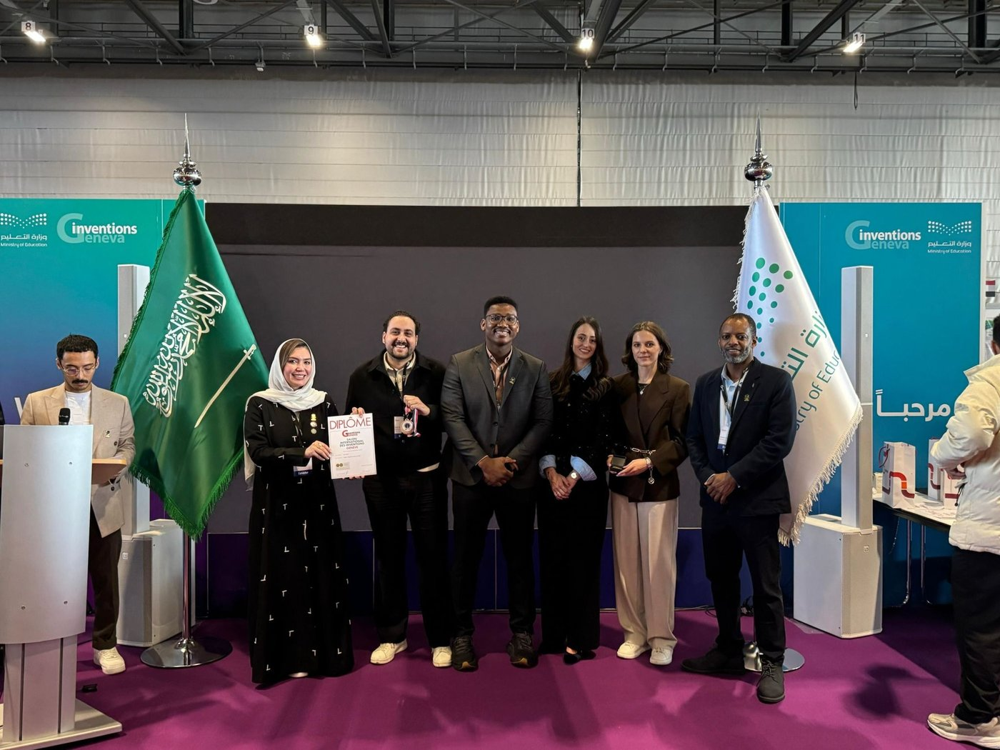
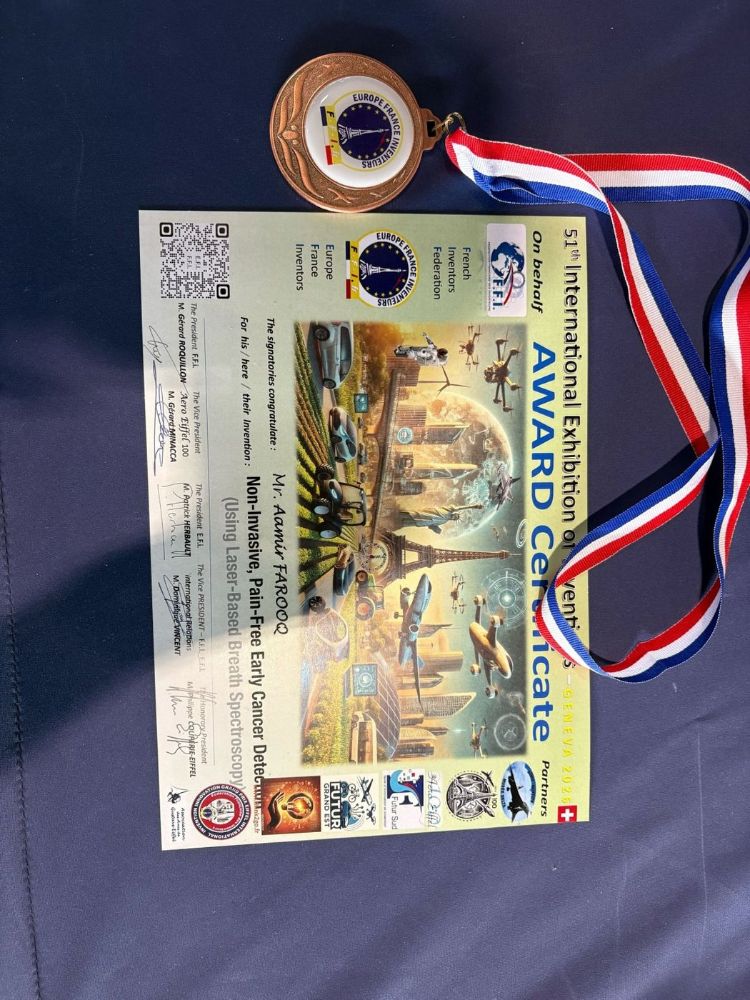
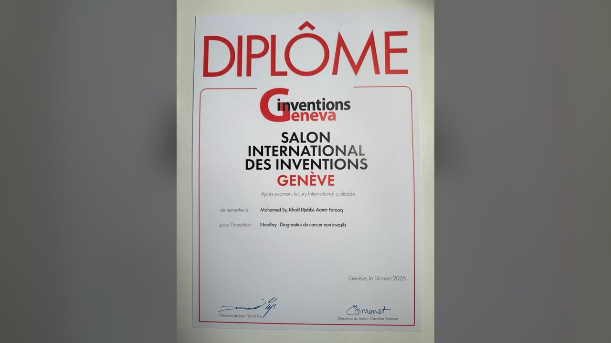
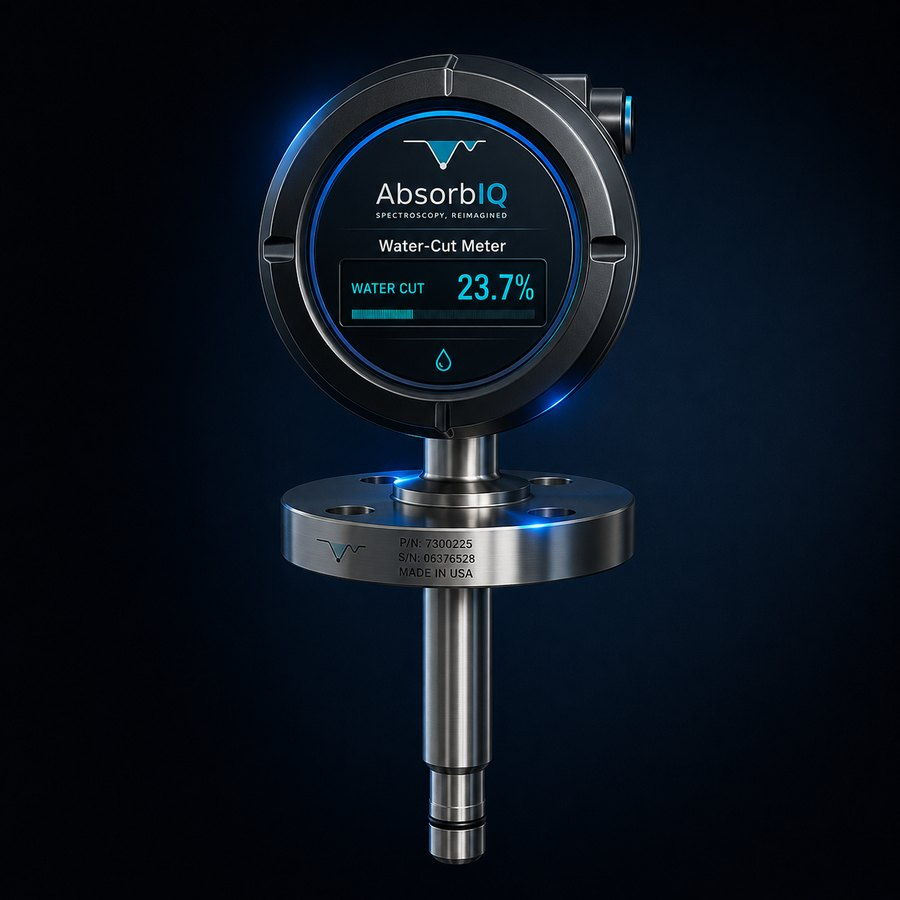
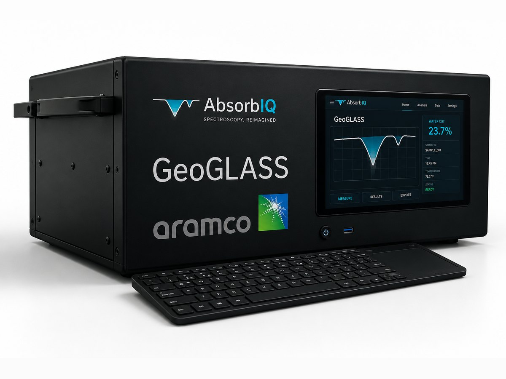
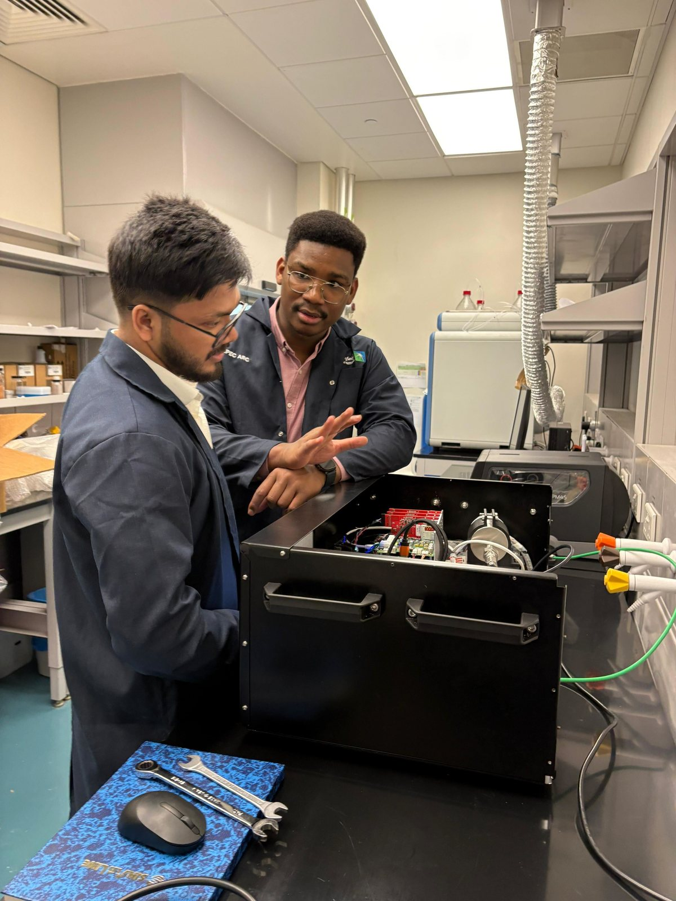
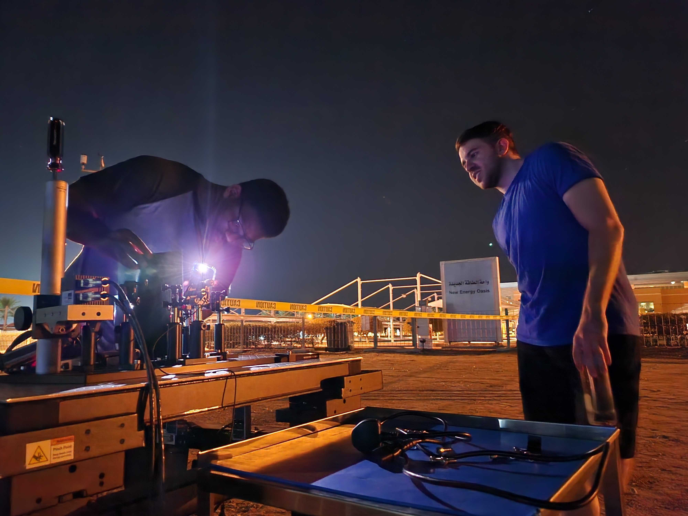
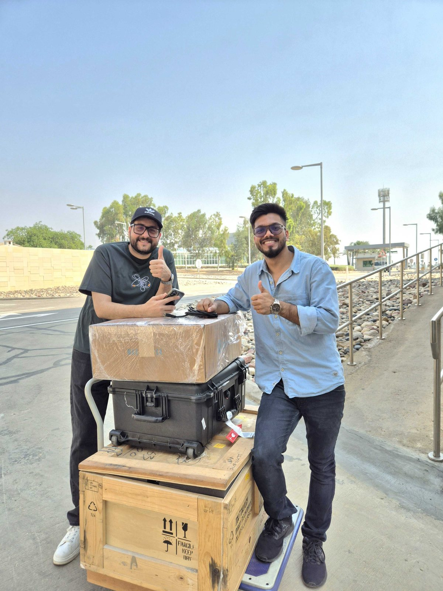

iENA 2025
Gold Medal at iENA — the International Trade Fair "Ideas · Inventions · New Products," Nuremberg, Germany.
AbsorbIQ builds AI-augmented mid-IR spectroscopy for real-time industrial gas intelligence — simultaneous sub-ppm detection of 10+ gas species in a single measurement.
Sub-ppm detection of 10+ gases in a single shot — replacing a rack of single-gas instruments.
Deep-learning inversion with real-time uncertainty quantification — not just a number, a decision.
Proven in shock tubes at 2000 K and live Aramco greenhouse-gas field campaigns.
Built at & backed by the ecosystem of
Legacy analyzers were never built for a world of real-time emissions accountability — just as regulation makes that accountability mandatory.
Single-species boxes, 5–20 minutes per sample. A full picture means a rack of instruments.
Constant recalibration drains budgets, and fragile hardware fails in harsh field conditions.
Raw readings with no uncertainty, no context and no AI — leaving operators to guess.
A regulatory tsunami is here. EU CBAM · SEC Climate Rules · UNEP Methane Pledge · Saudi Vision 2030 — all demanding continuous, auditable molecular data.
A vertically integrated stack that turns raw mid-IR absorption into actionable, uncertainty-aware answers — in real time.
Tunable laser absorption across molecular fingerprint bands.
HITRAN/HITEMP-grounded spectral physics for every species.
1D-CNNs + VAEs with full uncertainty quantification.
Watch how AbsorbIQ turns light into real-time molecular intelligence.

AbsorbIQ's invention has earned the world's most prestigious innovation awards — and is protected by patents filed on its core methods.
Gold Medal at iENA — the International Trade Fair "Ideas · Inventions · New Products," Nuremberg, Germany.



Gold Medal with the Congratulations of the Jury at the International Exhibition of Inventions of Geneva — its highest distinction.
Purpose-built analyzers powered by one AI-native sensing core — from inline process meters to a full hardware-to-SaaS platform.

Optical, real-time water-cut measurement for production and separation streams — continuous and sampling-free.
Learn more
Laser absorption-spectroscopy sensor for geological exploration — detecting C1–C5 alkanes and their isomers.
Learn moreContinuous emissions monitoring for stacks and process lines.
Learn moreBattery-powered, portable multi-species detection for field teams.
Learn moreCompact module for drones, robots and embedded integrations.
Learn moreDashboards, alerts and decision intelligence across your fleet.
Learn moreNot a slideware concept — validated in the world's most demanding measurement environments.



CEM, fugitive methane and process analytics are the highest-growth nodes of the industrial gas analyzer market.
Aramco + KAUST deployments validating the platform in the field.
Scaling with partners like SABIC and ADNOC across regulated markets.
Edge OEM in drones — the molecular sensing infrastructure layer.
A KAUST FASTER Lab team spanning photonics, machine learning, spectroscopy and combustion science.
An 18-month runway to anchor pilots and first revenue — with a Seed round ($5–8M) targeted at 18 months post-close.
In conversation with KAUST Innovation Fund · Aramco Ventures (Wa'ed) · NEOM Tech · GCC deep-tech funds
"Every molecule emitted anywhere on Earth — measured, understood, and acted upon, in real time."
The molecular sensing infrastructure layer for the industrial economy.
Investors, pilot partners and exceptional engineers — we'd love to talk.